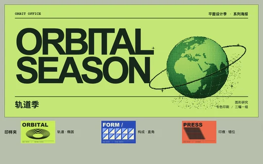
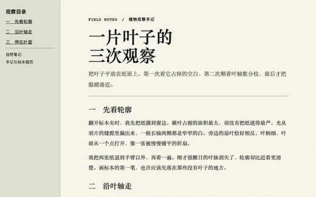
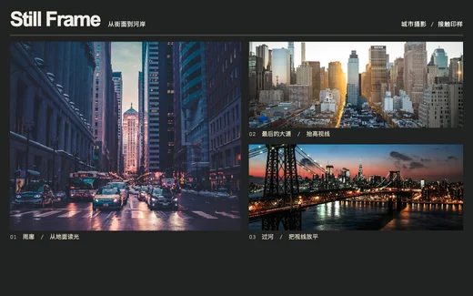
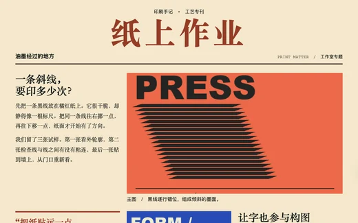
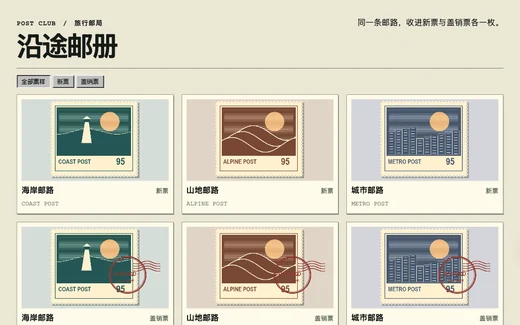
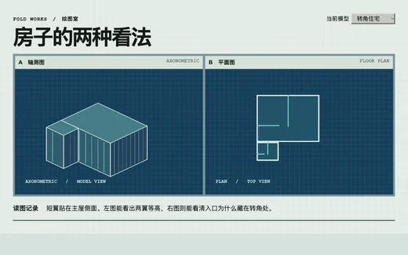
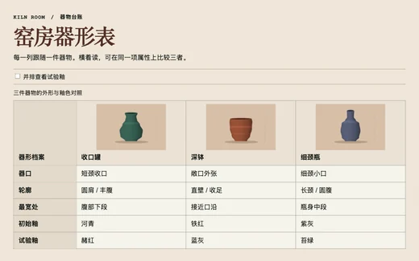
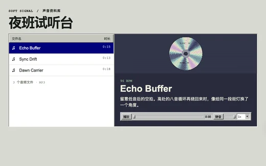
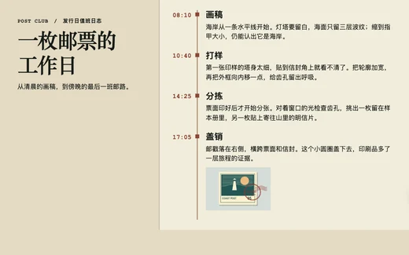
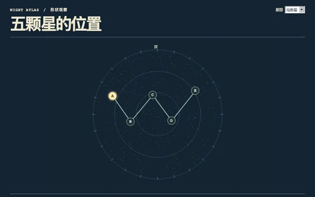

WINDOWS 95 / 网页排版样册
版式图鉴
十种阅读方式，从一张海报到一整张数据表。

10 种版式

单焦点海报
轨道设计季
开幕预告、唱片首发、单件作品封面
长文单栏
一片叶子的三次观察
随笔、研究笔记、长篇教程
非对称影墙
从街面到河岸
摄影系列、展览回顾、旅行相册
杂志图文混排
油墨经过的地方
工作室访谈、设计过程、专题报道
卡片目录
沿途邮局
商品、藏品、模板和可独立选择的条目
双联对照
房子的两种看法
方案对比、前后变化、设计图纸
属性矩阵
窑房器形表
规格选型、材料库、分类鉴别
主从列表
夜班试听台
收件箱、媒体库、文件浏览器
纵向时间线
一张邮票的行程
制作日志、版本记录、物流过程
空间标注图
五颗星的位置
地图、展品解剖、仪器说明| 示例 | 阅读顺序与结构 | 适用内容 | 使用边界 |
|---|---|---|---|
| 单焦点海报轨道设计季 | 巨型字标与轨道图形共用一张画布，日期和介质压进底边。 | 开幕预告、唱片首发、单件作品封面 | 主信息只能有一个。长说明放进底边的作品签，避免争抢视线。 |
| 长文单栏一片叶子的三次观察 | 侧栏定位章节，正文保持窄行宽，段落之间用小标题换气。 | 随笔、研究笔记、长篇教程 | 正文拉满宽屏会难以换行。旁注只解释最近的一段。 |
| 非对称影墙从街面到河岸 | 一张通高竖幅先抓住视线，两张横幅沿右侧接续；图注贴着各自拍摄对象。 | 摄影系列、展览回顾、旅行相册 | 素材需要有横竖和远近变化，否则大图只会让一张照片显得更重要。 |
| 杂志图文混排油墨经过的地方 | 通栏刊头之后，用大图、短栏、引文和细节图交替控制阅读速度。 | 工作室访谈、设计过程、专题报道 | 跨栏图片应靠近解释它的文字。手机上须重新安排图文顺序。 |
| 卡片目录沿途邮局 | 每张卡拥有独立图像、名称和票态，筛选后仍可单独阅读。 | 商品、藏品、模板和可独立选择的条目 | 卡片擅长挑选；如果读者要逐项核对参数，矩阵更省眼力。 |
| 双联对照房子的两种看法 | 两张图共用对象、比例框和基线，从左边的体量读到右边的平面关系。 | 方案对比、前后变化、设计图纸 | 比较对象或图框一旦不同，读者容易把视角变化误认为方案变化。 |
| 属性矩阵窑房器形表 | 器物沿列排列，器口、重心和釉色沿行展开，一行只回答一个问题。 | 规格选型、材料库、分类鉴别 | 属性必须可比较。窄屏保留行标题，允许横向查看。 |
| 主从列表夜班试听台 | 曲目清单保留当前位置，选中项的封面、笔记和播放器在另一侧更新。 | 收件箱、媒体库、文件浏览器 | 选中态和播放态要分清，切换内容时列表不能消失。 |
| 纵向时间线一张邮票的行程 | 时间做定位，节点承载事件；沿一条竖线就能读出先后。 | 制作日志、版本记录、物流过程 | 节点要有真实的先后关系，同时发生的资料不宜硬排成一列。 |
| 空间标注图五颗星的位置 | 星点位置决定标签落点，选中一个标记即可读到对应的观察笔记。 | 地图、展品解剖、仪器说明 | 屏幕缩小时标记容易相撞。把长注释放到画布外，只留短标记。 |